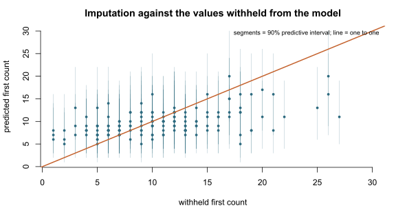

A worked partially observed fit
Source:vignettes/articles/partially-observed-fit.Rmd
partially-observed-fit.RmdA partially paired design records the second count on every row and
the first count on only some of them. binegbin_partialobs()
admits both kinds of row under one likelihood: a matched row contributes
the full joint probability of the pair, and a row whose first count was
never recorded contributes the second count’s marginal, taken from that
same joint model.
Partial observation is not censoring in the sense of brms’s
cens() addition term, which describes a value known to lie
in a set. Here the first count was not observed at all, and the
likelihood marginalises over its whole support.
Simulating a design with 40% of first counts unrecorded
The complete pair is generated first, and the first count is then withheld on the unmatched rows. Keeping the withheld values aside makes it possible to score the model’s imputation against them at the end, which is not something a real dataset permits.
set.seed(20260826)
n <- 400L
truth <- list(
mu = 6,
lambdaone = 4,
lambdatwo = 5,
shapes = 3,
shapexone = 2,
shapextwo = 4
)
n_shared <- rnbinom(n, size = truth$shapes, mu = truth$mu)
y1_full <- n_shared + rnbinom(n, size = truth$shapexone, mu = truth$lambdaone)
y2 <- n_shared + rnbinom(n, size = truth$shapextwo, mu = truth$lambdatwo)
# 60% of rows have both counts; on the rest the first count is withheld.
y1_obs <- rbinom(n, 1L, 0.6)
dat <- data.frame(
y1 = ifelse(y1_obs == 1L, y1_full, 0L),
y2 = y2,
y1_obs = y1_obs
)
withheld <- y1_full[y1_obs == 0L]
c(n = n, matched = sum(y1_obs), unmatched = sum(1L - y1_obs))
#> n matched unmatched
#> 400 243 157Two details of the data matter.
The observation flag is a 0/1 integer column, supplied through
vint() alongside the second count:
vint(y2, y1_obs) binds vint1 to the second
count and vint2 to the flag, in the order they are
listed.
On an unmatched row, the response column is not read by the
likelihood, so any non-negative integer serves as a placeholder;
0 is used above. Do not write NA there. brms
drops rows with a missing response before the family is reached, which
would discard the second count on exactly the rows the family exists to
use.
Fitting
fit <- brm(
bf(y1 | vint(y2, y1_obs) ~ 1,
mu ~ 1,
lambdaone ~ 1, lambdatwo ~ 1,
shapes ~ 1, shapexone ~ 1, shapextwo ~ 1),
family = binegbin_partialobs(),
stanvars = binegbin_partialobs_stanvars(),
data = dat,
prior = c(
prior(normal(2, 1), class = "Intercept"),
prior(normal(2, 1), class = "Intercept", dpar = "lambdaone"),
prior(normal(2, 1), class = "Intercept", dpar = "lambdatwo"),
prior(normal(0, 1.5), class = "Intercept", dpar = "shapes"),
prior(normal(0, 1.5), class = "Intercept", dpar = "shapexone"),
prior(normal(0, 1.5), class = "Intercept", dpar = "shapextwo")
),
chains = 4, iter = 2000, warmup = 1000,
seed = 20260826, refresh = 0,
control = list(adapt_delta = 0.95),
backend = backend
)
c(divergences = sum(nuts_params(fit, pars = "divergent__")$Value),
max_rhat = max(rhat(fit), na.rm = TRUE))
#> divergences max_rhat
#> 0.000000 1.005449The contribution of an unmatched row
An unmatched row is scored by
which is the joint model with the first count summed out over its whole support. The row is neither dropped nor given a separate univariate model on the second count, either of which would be a different model from the one the matched rows are fitted to.
Two consequences follow. An unmatched row informs , , , and any group-level effects. It does not inform or , which appear only in the matched branch.
Which parameters an unmatched row informs is a property of the likelihood rather than of this fit. What that property implies for a particular design is taken up further down.
draws <- as.data.frame(fit)
pars <- c(mu = "b_Intercept",
lambdaone = "b_lambdaone_Intercept",
lambdatwo = "b_lambdatwo_Intercept",
shapes = "b_shapes_Intercept",
shapexone = "b_shapexone_Intercept",
shapextwo = "b_shapextwo_Intercept")
recovery <- do.call(rbind, lapply(names(pars), function(p) {
x <- exp(draws[[pars[[p]]]])
data.frame(
dpar = p,
informed = if (p %in% c("lambdaone", "shapexone")) "matched rows" else "every row",
truth = truth[[p]],
median = median(x),
lower = unname(quantile(x, 0.025)),
upper = unname(quantile(x, 0.975))
)
}))
knitr::kable(recovery, digits = 2, row.names = FALSE)| dpar | informed | truth | median | lower | upper |
|---|---|---|---|---|---|
| mu | every row | 6 | 4.96 | 3.61 | 6.18 |
| lambdaone | matched rows | 4 | 5.08 | 3.90 | 6.45 |
| lambdatwo | every row | 5 | 6.15 | 4.90 | 7.55 |
| shapes | every row | 3 | 2.46 | 1.14 | 4.64 |
| shapexone | matched rows | 2 | 4.41 | 2.03 | 10.07 |
| shapextwo | every row | 4 | 5.93 | 2.98 | 12.18 |
Five of the six intervals contain their true value. The sixth, , does not: its interval runs from 2.03 to 10.07 against a truth of 2, so it misses at the lower end by 0.03.
The seed was not changed to make the miss disappear. A 95% interval from a correctly specified model excludes the truth 5% of the time by construction, and across six parameters the chance that at least one interval misses is about 26%. One near miss in six is therefore the expected behaviour of a working implementation, not evidence against it. The calibration evidence in this article is the coverage check further down, which is taken over 157 withheld counts rather than over one fit.
The three dispersions have much the wider intervals, because each is estimated from an aggregate mean–variance mismatch rather than from any directly observed quantity.
Imputing the withheld count
posterior_predict() returns a draw of the first count
for every row, conditional on the second count recorded there. The
observation flag selects a branch of the likelihood; it does not change
the prediction. Rows on which the first count was never recorded are
therefore predicted in exactly the same way as matched rows, which is
what the imputation depends on.
pp <- posterior_predict(fit)
idx <- which(dat$y1_obs == 0L)
imp <- data.frame(
withheld = withheld,
median = apply(pp[, idx, drop = FALSE], 2, median),
lower = apply(pp[, idx, drop = FALSE], 2, quantile, 0.05),
upper = apply(pp[, idx, drop = FALSE], 2, quantile, 0.95)
)
imp$covered <- imp$withheld >= imp$lower & imp$withheld <= imp$upper
c(n_unmatched = nrow(imp),
empirical_cover = mean(imp$covered),
nominal = 0.90)
#> n_unmatched empirical_cover nominal
#> 157.0000000 0.8980892 0.9000000The empirical coverage of the nominal 90% interval is a check on the imputation, not a test of the method: simulating from the model and refitting it makes the coverage nominal by construction when the implementation is correct. It is reported because a departure would indicate an implementation error, and because the interval widths themselves are the quantity a user planning such a design wants to see.
op <- par(mar = c(4.1, 4.1, 2.6, 1.1), bty = "n")
ord <- order(imp$withheld)
plot(imp$withheld[ord], imp$median[ord],
xlim = range(c(imp$withheld, imp$lower, imp$upper)),
ylim = range(c(imp$withheld, imp$lower, imp$upper)),
pch = 16, cex = 0.7, col = "#2D6A7F",
xlab = "withheld first count", ylab = "predicted first count",
main = "Imputation against the values withheld from the model")
segments(imp$withheld[ord], imp$lower[ord], imp$withheld[ord], imp$upper[ord],
col = "#2D6A7F44")
abline(0, 1, lwd = 2, col = "#C4622D")
mtext("segments = 90% predictive interval; line = one to one",
side = 3, line = -1.1, cex = 0.75, adj = 0.97)
plot of chunk imputation-check
par(op)The prediction is conditional on the second count, not on the withheld first count. The two counts have only the shared component in common, so the second count constrains the first only through that component and the prediction is shrunk towards the marginal mean of the first count, , here 10. High withheld counts are therefore under-predicted and low ones over-predicted: the posterior median regressed on the withheld count has slope 0.27 rather than 1. The vertical spread measures what the second count leaves undetermined about the first.
Choosing a matched fraction
and appear only in the matched branch, so as the matched count approaches zero they stop being identified and their posteriors return their priors. continues to be estimated from the second counts however few pairs are matched.
The matched rows also do work for the other four parameters, which
the branch structure alone does not show. An unmatched row constrains
and
only through the convolution that gives the second count’s marginal, and
that convolution determines the sum of the two components better than it
determines the division between them. Separating the shared component
from the second source’s own is done by the matched rows, because only a
matched row observes both counts of a pair. For
bipois_partialobs(), this is sharper still: an unmatched
row involves
and
through their sum
exactly, with no convolution to separate them.
Where the between-source bias or the congruence is the quantity of interest, the matched subset is the effective sample size for it. That is worth knowing before the data are collected.